| |
|
Malzeme
|
|
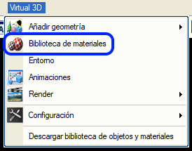 Bir sahnedeki nesnelerin görünümü malzemeler aracılığıyla tanımlanır. Bir malzeme, bir geometrik nesneye uygulanan bir dizi görsel özelliktir. Malzeme menüsüne erişmek için Sanal 3B ikon menüsündeki  butonu kullanılır. butonu kullanılır.Malzemeler, İnşaat Mühendisliği dünyasıyla ilgili konulara göre klasörler halinde düzenlenmiş ve sınıflandırılmıştır. Bu menüden yeni malzemeler tanımlanabilir, mevcut malzemeler değiştirilebilir ve sahnedeki nesnelere uygulanabilir. Malzeme kütüphanesi LIBSOL klasörü içinde yer alır. Kullanıcı, çalışma klasörü içinde bulunan bir LIBSOL klasöründe "yerel" malzemelere sahip olabilir. Topografya üçgenlemeleri (araziler), proje geometrisi ve kütüphanedeki bazı nesneler gibi otomatik olarak oluşturulan nesnelerin varsayılan olarak atanmış malzemeleri vardır, ancak bunlar değiştirilebilir. Malzemesi olmayan elemanların ilişkili bir rengi vardır, ancak aydınlatmaları malzeme olarak tanımlanan kadar hassas değildir. 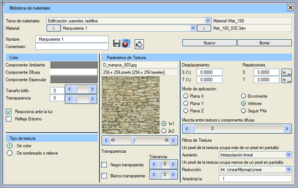
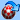Sanal 3B dışında değiştirilmiş olan malzemeleri güncellemeyi sağlar. Bu, diğer kullanıcılarla malzeme paylaşımı yapıldığında ve mevcut Sanal 3B oturumundan çıkmak istenmediğinde faydalı olabilir. Bu oturum başlatıldığından beri malzeme eklenmemişse gereksizdir.  Mevcut malzemeyi, seçilen klasöre (kütüphane veya yerel klasör) kaydeder. Mevcut malzemeyi, seçilen klasöre (kütüphane veya yerel klasör) kaydeder.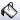Malzeme uygulama moduna girer, mevcut malzemeyi 3B görüntüleyicide işaretlenen tüm nesnelere (veya nesne parçalarına) uygular. Bu moddan "Esc" tuşuna basarak veya bu butona tekrar tıklayarak çıkılır. "<" ve ">" butonları, mevcut klasördeki tüm malzemeler arasında sırayla gezinmeyi sağlar. İsim: malzemeyi tanımlayan bir isim belirtir. Yorum: malzemeye açıklayıcı bir metin eklemeyi sağlar. Yeni: varsayılan olarak yeni bir malzeme oluşturur. Sil: mevcut malzemeyi bulunduğu klasörden siler. 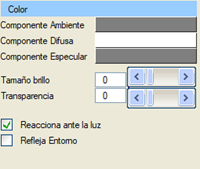 Nesnenin rengi, aydınlatmaya, oluşturulurken varsayılan olarak atanan renklerden daha hassas bir şekilde tepki verebilir. Malzemelerde belirtilen renkler, nesnelerin nihai renkleridir. Bu renkler, nesnelerin aldığı 3 tür aydınlatmaya verilen tepki olarak belirtilir: ortam, dağınık ve yansıma bileşeni. Bu bileşenler birbiriyle tutarlı olabilir, bu da gerçekçi efektler yaratır, ancak böyle olmak zorunda değildir, bu durumda farklı efektler ortaya çıkar. Ortam (Ambient) Bileşeni: nesnenin, kendisine ulaşan ortam ışığından yansıttığı ışığın rengini ve yoğunluğunu belirtir. Dağınık (Diffuse) Bileşen: nesnenin, bir ışık kaynağından doğrudan kendisine ulaşan ışıktan yansıttığı ışığın rengini ve yoğunluğunu belirtir. Yansıma (Specular) Bileşeni: nesnenin, parlaklıkların oluştuğu noktalarda yansıttığı ışığın rengini ve yoğunluğunu belirtir. Bu noktalar, ışığın konumuna, nesnenin konumuna ve gözlemcinin (kamera) konumuna bağlıdır. Parlaklık Boyutu: nesnelerin parlaklıklarının ne kadar keskin olduğunu belirtir; cilalı bir yüzey çok keskin ve yoğun parlaklıklar üretir (küçük boyut), pürüzlü bir yüzey ise çok dağınık parlaklıklar üretir (büyük boyut). Şeffaflık: nesnenin sahip olacağı şeffaflık derecesini belirtir. Eğer nesnenin kendisi zaten şeffafsa, sonuçtaki şeffaflık her iki şeffaflığın çarpımıdır. Işığa Tepki Verir: bu özellik işaretlenmezse, nesneler her türlü ışıkta aynı görünür, gölgesiz olarak dağınık bileşende tanımlanan renkte görünürler. Sonuçtaki etki gerçekçi değildir, ancak bir nesneyi vurgulamak için kullanılabilir. Ortamı Yansıt: nesnenin, sahnenin ortamında tanımlanan "ortam haritasını" yansıttığını belirtir. Camlar ve aynalar için kullanışlıdır. 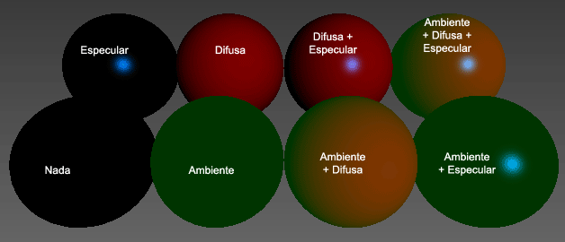
Resimde, renk bileşenleriyle oynanmış farklı malzemeler gösterilmektedir. Sahne beyaz bir ışıkla aydınlatılmıştır. (İlk resimde, ortam bileşeni her zaman yeşil, dağınık bileşen her zaman kırmızı ve yansıma bileşeni her zaman cyan'dır, çünkü mavi neredeyse hiç görünmez. Turuncu renk, ortam bileşeni ile dağınık bileşenin toplamından ortaya çıkar). 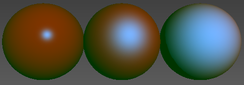
Resimde, farklı parlaklık boyutlarına sahip bir malzeme gösterilmektedir: 0, 91 ve 99. Bu, OpenGL'e bağlıdır ve doğrusal değildir.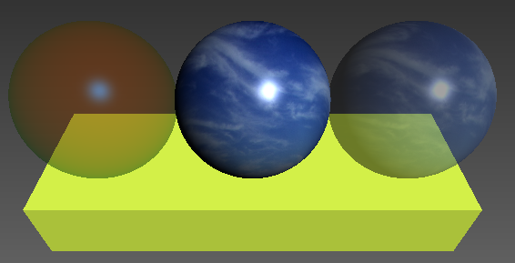
Resimde, şeffaflığa sahip, ortam haritasına sahip ve her ikisine de sahip bir malzeme gösterilmektedir.Doku kaplama, bir görüntüyü geometri üzerine yapıştırmaktan ibarettir; bununla birlikte, nesnenin rengi, nesnenin belirli bir noktasına yansıtılan dokunun pikselinin rengi olur. Ancak dokuların gölge veya kabartma oluşturma gibi başka kullanımları da vardır. Menüde dokunun adı, görüntünün boyutu ve görüntünün kendisi görünür. Sabit boyutlu bir pencerede gösterildiği için, görüntünün boyutlarının en-boy oranı pencereyle uyuşmuyorsa deforme olmuş görünebilir. Görüntünün altında, doku görüntüsünü değiştirmeyi sağlayan bir kaydırıcı bulunur. Ayrıca aynı anda 1, 4 veya 9 doku görmeyi sağlayan seçiciler de vardır. Renk (temel) doku kaplamada, doku olarak sadece bir görüntü kullanılır. Tekrarlar (X, Y): görüntünün nesneye boyuna veya enine yönde kaç kez tekrarlandığını belirtir. "m" veya "n" butonları, atanan değerin tekrar sayısına mı yoksa metre sayısına mı karşılık geldiğini belirtir. Öteleme (X, Y): ilk tekrarın nesneye göre bir öteleme ile yapılacağını belirtir. Uygulama Modu: doku görüntüsünün nesne üzerine nasıl yansıtılacağını belirtir. X, Y veya Z Düzlemsel, dokunun sırasıyla pozitif X, Y veya Z yarı eksenlerinden "gönderiliyormuş" gibi yansıtıldığı anlamına gelir. Z Düzlemsel genellikle zeminler ve araziler için uygundur. X veya Y Düzlemsel genellikle duvarlar için kullanışlıdır. Sarmal, dokunun nesneyi saran dikey bir silindirden uygulandığı anlamına gelir. Silindirler ve küreler için iyidir. Güzergah Boyunca (KM'ye göre), görüntüyü KM'ye ve eksene olan mesafeye göre tekrar tekrar yansıtır. Bu, doğrusal proje geometrileri için en uygun yöntemdir. Kota Göre, görüntünün üst satırlarının nesnenin daha yüksek kotlarına ve alt satırlarının daha düşük kotlarına karşılık geldiğini yorumlayarak görüntüyü yansıtır. Satırları kotalara atamak için bir menü vardır. Arazileri dokulamak için iyidir. Köşe Noktasına Göre, herhangi bir köşe noktasına atanan doku koordinatlarını belirtebilirsiniz. Karışım Oranı: varsayılan olarak, bir doku uygulandığında renk kaybolur, ancak başka efektler elde etmek için dokuyu renkle karıştırabilirsiniz. 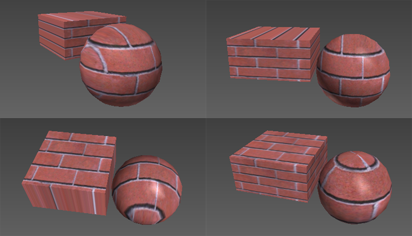
Resimde (soldan sağa ve yukarıdan aşağıya) X düzlemsel, Y düzlemsel, Z düzlemsel ve sarmal doku kaplama örnekleri görülmektedir.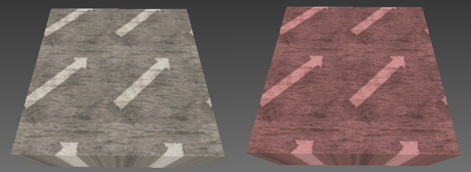 Resimde tekrarlanan ve ötelenmiş dokular (sol) ve kırmızı bir nesne ile karışım oranına sahip bir doku (sağ) görülmektedir. 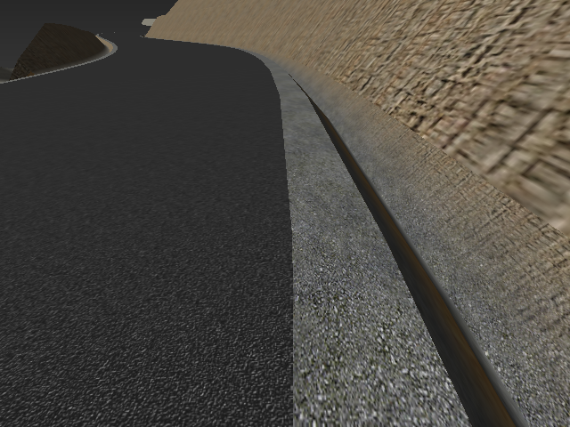
Projede tüm malzeme dokuları güzergah boyunca (KM'ya göre) uygulanır.Kota göre doku kaplamanın kendi menüsü vardır; doku menüsünde nesneye doku ataması için sadece o menüye erişim sağlayan büyük bir buton çıkar. Doku için kullanılan görüntü, geometri üçgenlerinin kotuna bağlı olarak geometri üzerine yansıtılacak olan yatay bantlar halinde düzenlenmiş renklerden oluşan dikey bir çubuktur. Bantlar, resimde görüldüğü gibi tek bir sürekli renkten veya renk geçişlerinden oluşabilir. 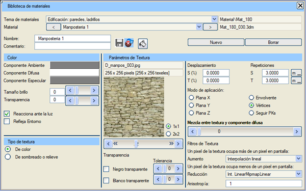
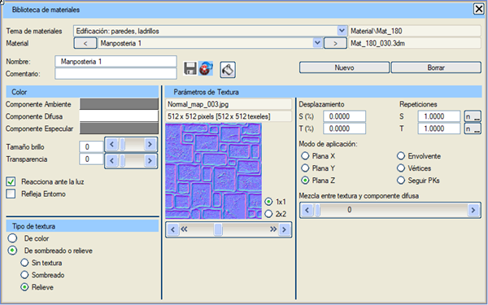
Ortofotolar, belirli bir coğrafi konuma sahip oldukları için arazilerin (ttp, grid) dokusu olarak kullanılabilecek fotoğraflardır. Diğer nesne türleri de bu dokuyu alabilir, ancak bu en yaygın kullanımı değildir. Uygulama modu "Z Düzlemsel"e çok benzer, ancak tekrarlar (bir tane olması dışında) veya ötelemeler (görüntünün belirli konumu dışında) yoktur. Ayrıca, bir görüntü veya ortofotoların bulunduğu bir klasör kullanılabilir. Bu görüntüler genellikle çok büyük olduğundan, Sanal 3B, orijinal görüntüden dokunun alınacağı kaliteyi yapılandırmaya izin vererek kullanımını optimize eder. Koordinatlar ve piksel boyutu görüntüden alınır; her görüntü yalnızca kendi coğrafi koordinatlarında bulunan geometri için doku oluşturur. Bir görüntü klasörüyle çalışılması durumunda, Sanal 3B her bir görüntüden çıkardığı dokuyu kapladığı alana uygular ve eğer birden fazla görüntü aynı alanı kaplarsa, istenen doku kalitesine ve kamera ile doku kaplanan üçgenler arasındaki mesafeye bağlı olarak en çok bellek tasarrufu sağlayan görüntüden dokuyu alır. Oluşturulan malzemeler, Istram'ın çalışma klasörünün yerel bir klasörü olan libsol'de saklanır. 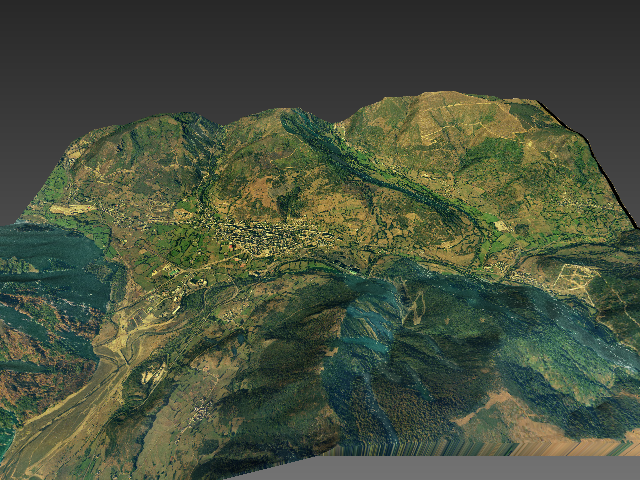 Resimde bir araziye (ttp) uygulanmış bir ortofoto dokusu görülmektedir. Yapılandırma menüsünde, orijinal görüntüden dokunun alınacağı kalite belirtilebilir: Taslak, Orta, Yüksek veya Maksimum. Her kalite, sırasıyla 512x512, 1024x1024, 2048x2048 veya 4096x4096 piksel boyutlarında dokuların alınması anlamına gelir. Daha yüksek kaliteler, sahip olunan grafik sisteminin kapasitesine bağlıdır; eğer sistem 2048x2048 pikselden daha büyük dokuları desteklemiyorsa (örneğin), yüksek ve maksimum kalite arasında bir fark olmaz. Eğer orijinal görüntünün piksel boyutu 4096x4096'dan küçükse (örneğin), o boyutta bir doku da oluşturulmaz ve bu kaliteler arasında da bir fark olmaz. 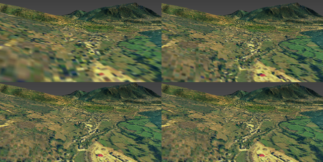 Resimde (soldan sağa ve yukarıdan aşağıya) sırasıyla taslak, orta, yüksek ve maksimum kalitede bir ortofoto dokusu gösterilmektedir. Gelişmiş seçenekler, dokulara daha fazla kalite veya nesneye başka özellikler eklemeyi amaçlar. 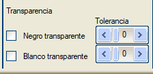Bu seçenekler, dokunun beyaz veya siyah olduğu yerlerde nesneye şeffaflık kazandırır. Siyah Şeffaf: dokunun siyah piksellerinin, yansıtıldıkları yerde nesneyi şeffaf hale getireceğini belirtir. Beyaz Şeffaf: dokunun beyaz piksellerinin, yansıtıldıkları yerde nesneyi şeffaf hale getireceğini belirtir. Tolerans: sadece tamamen siyah veya tamamen beyaz olan piksellerin değil, aynı zamanda yeterince benzeyenlerin de şeffaf olmasını sağlar. 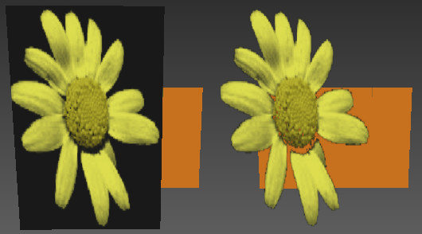
Resimde, bir malzemeye doku şeffaflığının uygulanması görülmektedir. Sol tarafta şeffaflık yoktur ve sağ tarafta siyah renk şeffaftır.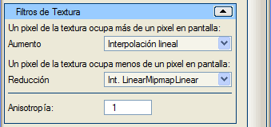Bu ilişki 1'e 1 olmadığında, yani neredeyse her zaman, doku pikselleri ile görüntü pikselleri arasındaki ilişkiyi grafik sistemine bildirmek için kullanılır. Doku piksellerinin ekranda birden fazla piksele uygulanması gerektiğinde (nesne kameraya çok yakın olabilir veya doku görüntüsü çok düşük çözünürlüklü olabilir) nesneye nasıl atanacağı belirtilebilir. İki seçenek vardır: ekran pikseli en yakın doku pikselinin rengini alır veya görüntü pikselinin mesafeleri dikkate alınarak, görüntü pikselinin bulunduğu alana karşılık gelen doku pikselleri arasında doğrusal bir enterpolasyon yapılır. Genellikle en yakın pikseli aramak, doğrusal enterpolasyondan daha hızlı ve daha düşük kalitelidir. 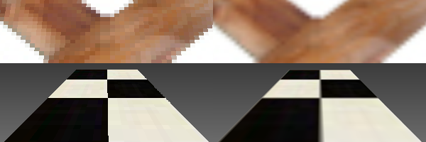
Resim, iki doku büyütme örneği göstermektedir. Resmin sol tarafında, sonuç pikselli olmasına rağmen bazı durumlarda ilginç olabilen en yakın pikselin kullanımı gösterilmektedir. Sağda ise doğrusal enterpolasyon kullanımı gösterilmektedir.Bir doku pikseli ekranda bir pikselden daha az yer kapladığında, birkaç enterpolasyon seviyesi vardır. - En Yakın Piksel. - Doğrusal Enterpolasyon. - NearMipmapNear Enterpolasyonu. - NearMipmapLinear Enterpolasyonu. - LinearMipmapNear Enterpolasyonu. - LinearMipmapLinear Enterpolasyonu. Liste boyunca ilerledikçe yumuşaklık ve işlem süresi artar. 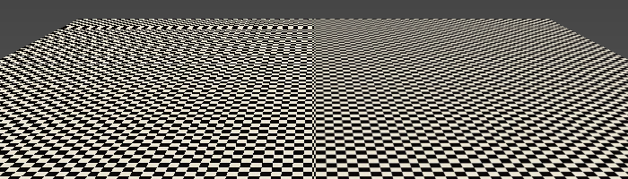 Sol resimde en yakın piksel kullanımı, sağda ise Anizotropi 16 ile LinearMipmapLinear enterpolasyonu gösterilmektedir. Sol resim hızla girişim desenleri oluştururken, sağ tarafın görünümü oldukça uzağa kadar kabul edilebilir kalır. Anizotropi, dokuların uygulanmasını iyileştirmeye çalışan grafik sistemi tarafından sağlanan bir mekanizmadır. Minimum değer 1'dir ve herhangi bir düzeltme yapılmamasına eşdeğerdir; maksimum değer ise grafik sisteminden okunur ve bu nedenle donanımdan donanıma değişir. Gölgelendirme dokuları, nesnenin yüzeyine karanlık alanlar ekleyerek pürüzlülük hissi verir; genellikle siyah beyaz veya gri tonlamalı görüntülerdir. Tek doku olarak veya normal bir dokuya eşlik ederek kullanılabilir. 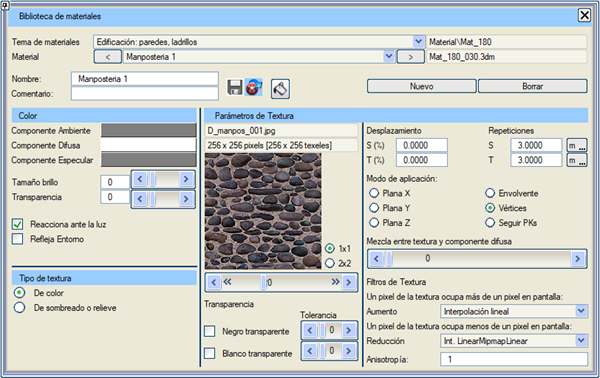
Yapılandırma parametreleri, tekrar, öteleme ve uygulama modu açısından normal dokulara benzer. Eğer başka bir dokuya eşlik ediyorsa, bu parametreler eşleşebilir veya eşleşmeyebilir. Farklı olan seçenekler şunlardır: Gölgelendirme: dokuyu gölgelendirme dokusu olarak ayarlar. Siyah şeffaf: dokunun siyah kısımlarının nesneyi şeffaf hale getireceğini belirtir, geri kalanı normal renginde kalır, gölgelenmez. Beyaz şeffaf: dokunun beyaz kısımlarının nesneyi şeffaf hale getireceğini belirtir, geri kalanı normal renginde kalır, gölgelenmez. 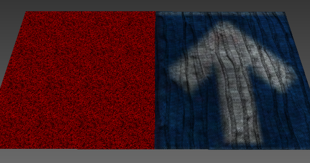
Resimde, düz kırmızı renge ve bir renk dokusuna uygulanmış iki gölgelendirme dokusu görülmektedir.Üçgenlerin görünürdeki kabartmasını değiştirmek için kullanılır, bu da nesnenin gerçekte olduğundan çok daha fazla üçgene sahip olduğu hissini verir. Doğru görünmeleri için grafik sisteminin shader'ları kabul etmesi ve bu malzemeye sahip olan nesnenin (veya nesne parçasının) Gelişmiş Render kutucuğunun işaretli olması gerekir. Genellikle ilgili bir renk dokusuna eşlik etmesi normaldir. Menü resminde, dokular arasındaki uyumu görmek için hem normal doku hem de kabartma dokusu gösterilmektedir. Bu durumda tüm parametreler aynıdır. 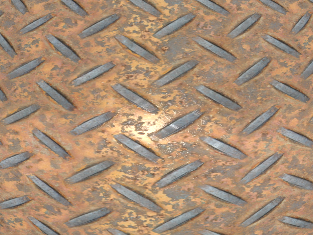 Resimde, dokulu nesnenin bir detayı gösterilmektedir. Görünüşe göre geometri, "görünüşte" yapıldığı malzemenin, yani sacın kabartılarını içeriyor. Parlaklıklar ve paslı alanların görünürdeki kabartması, sanal olmadığı hissini veriyor. Bu sonuç sadece gelişmiş render ile elde edilir. Grafik sisteminin davranışını yeniden programlayan "shader" adı verilen küçük programlar kullanılır.  Bu kabartma dokuları ve gelişmiş render çok fazla kaynak tüketir ve nesne yeterince yakından ve hassas bir açıyla görülmedikçe fark edilmez. Genel görünümlerde normal veya en fazla gölgelendirilmiş doku kaplama yeterlidir. Bu kabartma dokuları ve gelişmiş render çok fazla kaynak tüketir ve nesne yeterince yakından ve hassas bir açıyla görülmedikçe fark edilmez. Genel görünümlerde normal veya en fazla gölgelendirilmiş doku kaplama yeterlidir.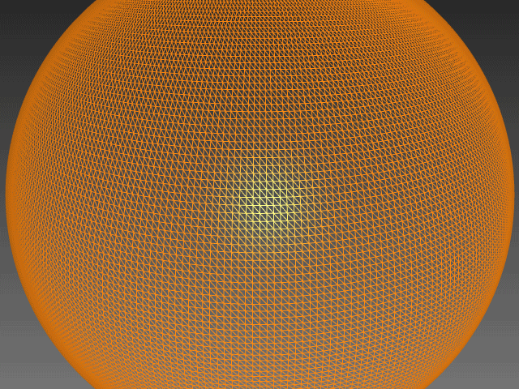
|